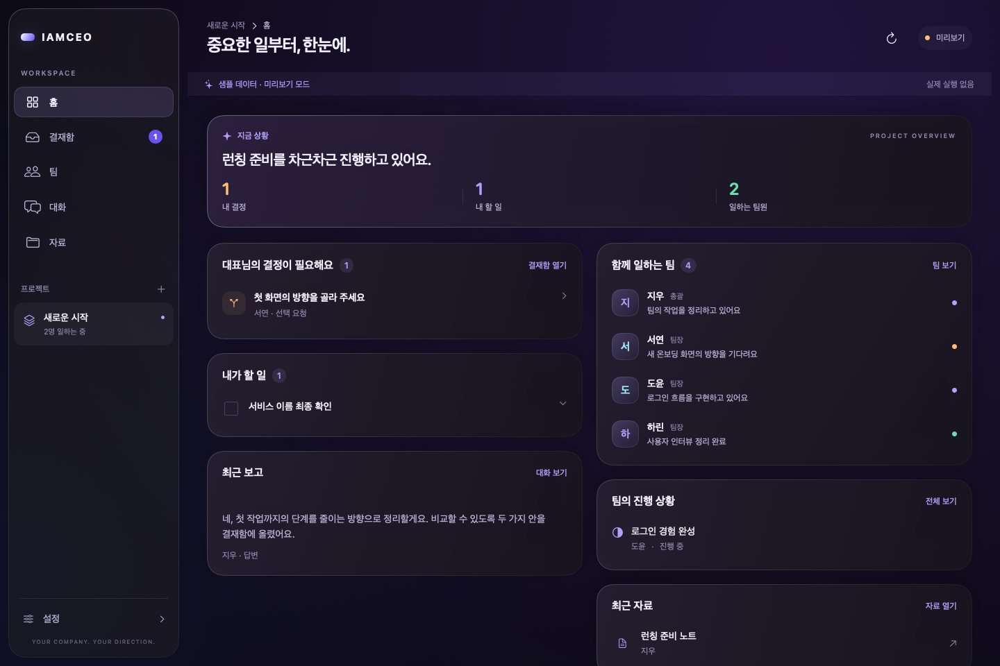
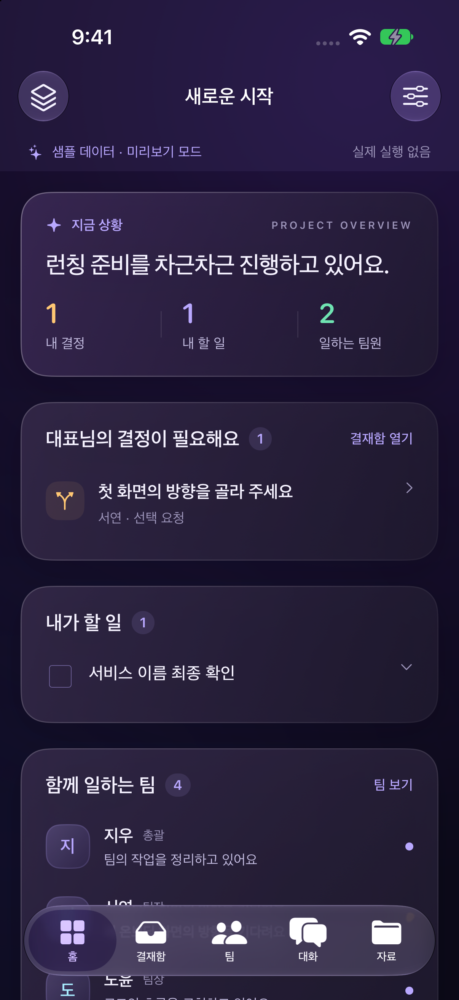

IAMCEO / NATIVE BUILD같은 업무, 각 기기에 맞는 화면.
SwiftUI로 구현한 다크 바이올렛 · 글래스 화면입니다. 홈, 결재함, 팀, 대화, 자료를 Mac과 iPhone에서 동일하게 제공합니다.
아래는 명시적인 샘플 모드의 구현 화면입니다. Mac은 잠긴 기기에서 NSHostingView로 렌더링했고, iPhone은 실제 iOS 시뮬레이터를 캡처했습니다. 이 페이지는 화면 확인용이며 앱 기능은 네이티브 앱에서 동작합니다.
macOS · 사이드바와 넓은 업무 화면

iOS · 하단 탭과 세로 업무 화면
